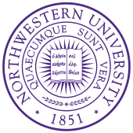

Experience
Experience
Datadog
Engineering Manager
June. 2023 – Present | New York City | Full time
Leads the product engineering team responsible for Datadog’s incident management productPeloton
Engineering Manager
Feb. 2021 – June 2023 | New York City | Full time
- Led a backend engineering team responsible for the content search and discovery experiences serving Peloton's 7 million members, balancing the interests of dozens of stakeholders from across the company, including partners in Product, Marketing, Production, and Engineering
- Trained, coached, mentored, and managed a distributed team of 14 direct reports ranging from junior to staff level, defining processes, policies, and support structures
- Oversaw a long-running effort to migrate hundreds of endpoints from a Python monolith to event-driven microservices fronted by a GraphQL gateway
- Led of a cross-functional project team of 15 engineers to deliver a suite of successful new features to improve the workout experience for Peloton members, such as Movements and Body Activity
- Established a standardized recruitment process for all backend teams, allowing them to hire quickly and effectively
- Drove significant improvements to the engineering onboarding experience, shortening the path to productivity for new hires across all product backend teams
- Successfully led a departmental effort to define team ownership over hundreds of resources, allowing Peloton to maintain operational excellence as it scaled
Lifion by ADP
Lead Platform Engineer
2018 – 2021 | New York City | Full time
- As functional lead of a team of eight engineers responsible for Lifion's client management system, organized project work, set architectural direction, and worked closely with product stakeholders
- Mentored other engineers and gave technical presentations weekly
- Designed and implemented a new federated GraphQL API, backed by TypeScript microservices
- Reworked outdated domain models and systems with a focus on test-driven development, multi-paradigm programming, and domain-driven design
- Successfully led a team of developers to deliver a new data processing tool under a critical deadline
New York Magazine
Senior Full-Stack Engineer
2016 – 2018 | New York City | Full time
- Spearheaded the full-stack engineering of The Cut’s homepage redesign, including the Node microservice that populates homepages with content based on editorial specifications
- Designed a dynamic client-side JavaScript dependency analysis and bundling system, shrinking response payloads on article pages up to 18 percent globally
- Contributed to the in-house, Vue-based content-management system and page editor
- Built The Year In Memes, a National Magazine Award finalist
Slate.com
Lead News Apps Engineer
2012 – 2016 | New York City | Full time
- Built interactive visualizations, widgets, and games using Node and React
- Developed apps that told important stories about gun violence, dark money, and gentrification
- Produced some of Slate’s most recognizable work, including the Game of Thrones Graveyard and the Outrage Calendar, a National Magazine Award finalist
- Developed games, such as the Gerrymander Jigsaw Puzzle and the Starbucks Quiz, as well as a production platform for creating audio and video quizzes
- Built Slate’s Gun Deaths project, featured on NPR, MSNBC, and The Daily Show
- Built a desktop email client and chronicled the project in a long-form essay
- Managed a junior engineer and three interns
- Broke Slate’s all-time traffic record with the “Travoltify Your Name” generator
City University of New York
Adjunct Lecturer
2015 – 2016 | New York City | Part time
Taught data journalism, HTML, JavaScript, and R to graduate students with my own courseworkYahoo!
New Media Intern
Summer 2010, Summer 2011 | Sunnyvale | Full time
Evaluated geoparsing software for a new hyperlocal news productEducation

Northwestern University
Magna Cum Laude
Bachelor of Science in Journalism
Skills
- JavaScript
- TypeScript
- Python
- Golang
- Node
- React
- Webpack
- GraphQL
- PostgreSQL
- MySQL
- MongoDB
- DynamoDB
- AWS
- Elasticsearch
- Kubernetes
- Docker
- Terraform
- Vue
- D3
- Git
- R
Recognition
- Finalist, Multimedia Feature, National Magazine Awards 2017
- Best Single-Topic News or Feature, Education Writers Association, 2016
- Finalist, Multimedia Feature, National Magazine Awards 2015